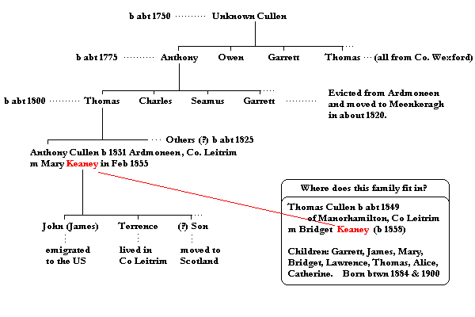

| Follow the above link to the main page for this topic or click the graphic below to visit the Homepage. |
 | Lost Line of Cullens from Co Leitrim, Ireland Various sources |
Evidently, there was a Cullen family in Co Wexford that was evicted from their lands by Cromwell. We cannot be certain about the time of the eviction but I would set a loose time frame of about 1580 to about 1641. After this is an undetermined amount of time when the family either lived in Scotland or wandered about in Ireland. (I would mention here the Cullens of Upton, Nottighamshire, England, a related family founded by Richard Cullen in about 1560 and who's history may very well include some time spent in Scotland.) Exactly when the split occurs between the Catholic and Protestant branches is also uncertain though the settlement scheme and the more serious religious differences began in earnest in the early 1600's in this area. The Cullen Family Pedigree written by David Cullen in 1860 states the Captain John Cullen, evidently already Protestant or a convert, was granted first lands in Co Tryone in 1648 - it was not until 1660 that he came to Manorhamilton. It's interesting to note that the Cullen Family Pedigree does not mention Co Wexford at all (in fact, he places the ancestry of the Cullens in Scotland in the tenth century!). Further, he makes no mention of any related Cullen families (Protestant or Catholic) near Glenfarne though his knowledge of the earliest families is sketchy and, according to some, this is when the split occurred. You can see the difficulties developing already!
What this all comes down to is, allegedly, two branches of this one Cullen family in Co Leitrim - the Catholics around Glenfarne and the Protestants around Manorhamilton. Despite the oral history which suggests this scenario, it's been difficult to find support for it anywhere else. The "Lost Line" depicted below seems to be the correct family but uncertainty is still great and the research continues. Any help you can provide would be much appreciated.

One of the branches of this family and the the numerous Cullens of Glenfarne are said to be descended from four brothers and one sister who arrived with their elderly father in Glenfarne around the second half of the 1700's. Traditionally, it's believed that the Cullens of Manorhamilton and the Cullens of Glenfarne were part of the same family that originally lived in Co Wexford but were evicted from their lands in Cromwellian times. This time estimate may be in error however. For a while, some of the family became travelers, living on the road. Others may have migrated to Scotland for a time. Eventually, both branches settled in north Leitrim. During the Penal Laws, one branch became protestant in order to hold onto their lands (these were the wealthy Manorhamilton Cullens) while the other branch, the "Pork Cullens", refused and were evicted then to nearby Glenfarne. The relative wealth of the Manorhamilton Cullens is explained by the military pay and land grants made to Captain John Cullen, the ancestor of this branch, for his services during the Cromwellian campaign.
There is a mention of an Anthony Cullen who had a daughter named Alice. Alice Cullen was married to Lawrence Flynn (1812-1850) and they had eight children before Alice died of asthma thirteen years after their marriage. The family was from the parish of Cloonclare. It's not known if this Anthony Cullen, father of Alice, is the same as the Anthony b. c1750 of Co Fermanagh. It's not very likely if the year 1750 is an accurate estimate of Anthony's date of birth. The name Cullen appears in the Flynn family earlier also. Peter Flynn (b1787) was married to a Mollie Cullen (his second wife).
Anthony Cullen b. c1750 of Co Fermanagh had a son named Seamus. Seamus is said to be the progenitor of the "Charlie, Mickie, Charlie" Cullens. According to the family, Seamus (James) had a son Charles, who had a son Michael, who had a son Charles - thus the "Charlie, Mickie, Charlie" Cullens. This last Charles had a daughter named Bridget. She was married to Patrick Scollan and was the second of his three wives. She was born c1885 and was later of Carrickcreavagh, Co Leitrim and died in 1910.
Anthony Cullen, the father of Seamus, had three brothers; Owen, Garret and Thomas. All four of the brothers are said to have come from Co Wexford.
Seamus had several brothers; Garrett, Charles, and Thomas. All four are said to have been born in Ardmoneen but were evicted about 1820.
Here is more concerning the Cullen families of Upper Brockagh, Co. leitrim:
Thomas Cullen (born prob abt 1820) married Anne Keaney and they had the following children:
Patrick 22Dec1843 (died in infancy?), Michael 08Jan1845, Patrick 24Aug1848 (Patrick m Ellen Harte), Eugene 09Jul1853, Bridget 13Nov1854, Gerald 13Nov1858, Thomas 24Feb1860.Patrick Cullen married Ellen Harte and they had the following children:
Anne 11Apr1874, Thomas 08Sep1878 (married Delia 'Bridgett' McHugh), Michael 30Jan1881, Garrett 22Aug1883, Patrick 28Jan1886, James 01Jul1888, John 19Mar1891.
If you have any information which you believe will help with the above problem, please e-mail me. Updates will be posted to this page.